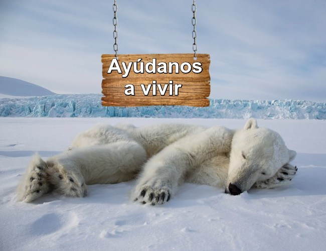
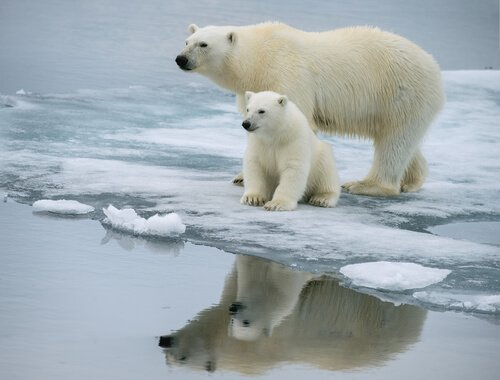
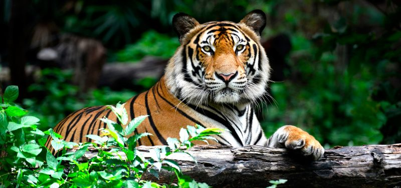
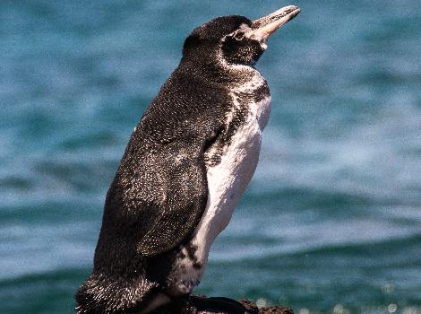

|
|
|

El oso polar u oso blanco Este tipo de mamífero es una de las especies más amenazadas de la Tierra,
y algunos no les pronostican

|
Dato interesante:Lamentablemente, son muchas las especies que hoy en día se encuentran en riesgo de extinción. Muchas de ellas, debido a la acción del hombre y el cambio climático global, lo que resulta igualmente un efecto indirecto de las actividades del ser humano. Algunas de ellas ya están condenadas a desaparecer de aquí a unos años y, aunque hay muchas organizaciones que trabajan por preservarlas, día a día siguen sufriendo.Elefante AsiáticoLos elefantes asiáticos son más pequeños que los elefantes africanos, y asimismo tienen más pequeñas y redondeadas las orejas y la piel más suave. Los elefantes asiáticos están en riesgo debido a la caza furtiva y la pérdida de hábitat.El Leopardo de AmurEstán en riesgo crítico. Este especie de leopardo se halla en Rusia y unas partes de China. Hace algunos años había solo 20 leopardos de Amur en estado salvaje.TigreHay múltiples especies de tigres, y todos están en riesgo de extinción. El tigre de Bengala es la más abundante clase de tigres, no obstante, solo hay alrededor de 2500 que viven en estado salvaje. Es bastante difícil opinar porque que uno de los animales más identificables de la mayoría del planeta está incluido en una lista de animales en riesgo de extinción.Pingüino de GalápagosLos pingüinos de Galápagos viven en las islas Galápagos, y son el único pingüino encontrado al norte del ecuador. Son el segundo más pequeño pingüino: solo el pequeño pingüino es menor.Aqui podras saber mas acerca de los animales en peligro de extincion en México: |
| Contactanos Twitteanos Mandanos mensaje | |